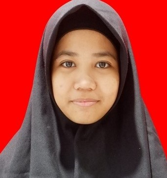

Rezkyanti
Mahasiswi
Phone:
+62 8529-2113-160
rezkyanti.muh.ali@gmail.com
Address
Jl. Sanani No. 30
Date of Birth
July 14th, 2001


+62 8529-2113-160
rezkyanti.muh.ali@gmail.com
Jl. Sanani No. 30
July 14th, 2001
Nama saya Rezkyanti, lahir di kota Makassar, 14 Juli 2001, saya merupakan anak ke-4 dari 4 bersaudara, seorang anak yang merupakan hasil buah pasangan H. Moh. Ali HR dan Hj. Julaeha. Ikki ialah nama panggilan yang sering dipakai ketika orang-orang memanggil saya. Saya adalah seorang yang suka dengan hal-hal yang baru dan bersosialisasi dengan orang banyak. Membagi kebahagiaan dengan orang lain merupakan salah satu hal yang saya sukai. Terkadang, jika saya memiliki waktu luang saya akan melakukan hobi saya yaitu, membaca ataupun berenang.
Saya mulai menempuh pendidikan di sebuah taman kanan-kanak yang berada di sekitaran rumah dan taman kanak-kanak tersebut bernama TK. Saya memulai mengikuti pendidikan taman kanak-kanak pada tahun 2005 dan lulus pada tahun 2007.
Setelah lulus dari pendidikan taman kanak-kanak, saya melanjutkan pendidikan ke tingkat sekolah dasar pada tahun 2008 dan memilih melanjutkannya di SDN SANGIR kemudian lulus pada tahun 2013. Sempat beberapa kali mengikuti beberapa lomba, baik akademik maupun non akademik.
Setelah lulus dari SDN SANGIR, saya pun melanjutkan pendidikan saya di SMP NEGERI 05 MAKASSAR. Selama menempuh pendidikan pada tingkatan saya tidak mengikuti ekskul maupun organisasi. Kalau prestasi di kelas, saya sempat meraih peringkat pertama pada saat berada di kelas SMP.
Setelah lulus dari SMPN 05 MAKASSAR, saya melanjutkan pendidikan ke jenjang yang lebih tinggi dan memilih SMA ISLAM ATHIRAH MAKASSAR. Di masa SMA ini, saya cukup aktif dalam kegiatan yang diadakan sekolah. Saya pun mengikuti ekskul KIR dan pernah mengikuti organisasi OSIS dan MPK. Sempat meraih juara 3 pada lomba karya tulis ilmiah.
Tim Pelaksana LDK/UPGRADING 2018
Sekretaris panitia Masa Pengenalan Lingkungan Sekolah (MPLS) pada tahun 2017
Panitia Pelaksana AFC PART 9
Membaca
Menari
Berenang
Menyanyi